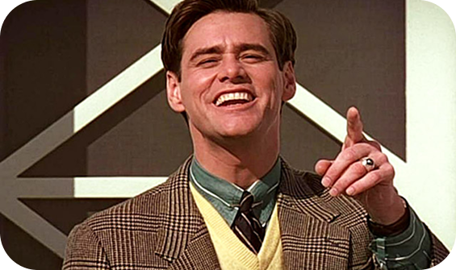

Destaque:
O show de Truman
RESUMO
Truman vive uma rotina comum e tranquila, até começar a notar falhas em seu cotidiano. Pequenos acontecimentos o fazem desconfiar das pessoas ao redor. Ao conhecer Lauren, ele descobre que sua vida inteira é um programa de TV. Tudo e todos à sua volta são parte de uma encenação. Chocado, Truman busca a verdade e tenta escapar do controle imposto. A história revela uma crítica à manipulação e à ilusão de realidade